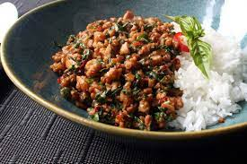

Description
Thai basil chicken is a stir-fry dish made with finely chopped or
groundadjus chicken cooked with chile peppers, garlic, and shallots, and
seasoned with a sweet and salty sauce and finished with fresh basil. It's
a classic dish in Thai cuisine and can be found in restaurants and as a
popular street food
Ingredients
For the Dish
- 2 tablespoons vegetable oil
- 1 pound skinless, boneless chicken thighs, coarsely chopped
- ¼ cup sliced shallots
- 4 cloves garlic, minced
- 2 tablespoons minced Thai chilies, Serrano, or other hot pepper
- 1 cup very thinly sliced fresh basil leaves
- 2 cups hot cooked rice
For the Sauce
- ⅓ cup chicken broth
- 1 tablespoon oyster sauce
- 1 tablespoon soy sauce, or as needed
- 2 teaspoons fish sauce
- 1 teaspoon white sugar
- 1 teaspoon brown sugar
Steps
-
Whisk chicken broth, oyster sauce, soy sauce, fish sauce, white sugar,
and brown sugar together in a bowl until well blended.
-
Heat large skillet over high heat. Drizzle in oil. Add chicken and
stir fry until it loses its raw color, 2 to 3 minutes. Stir in
shallots, garlic, and sliced chilies. Continue cooking on high heat
until some of the juices start to caramelize in the bottom of the pan,
about 2 or 3 more minutes. Add about a tablespoon of the sauce mixture
to the skillet; cook and stir until sauce begins to caramelize, about
1 minute.
-
Pour in the rest of the sauce. Cook and stir until sauce has deglazed
the bottom of the pan. Continue to cook until sauce glazes onto the
meat, 1 or 2 more minutes. Remove from heat.
-
Stir in basil. Cook and stir until basil is wilted, about 20 seconds.
Serve with rice.